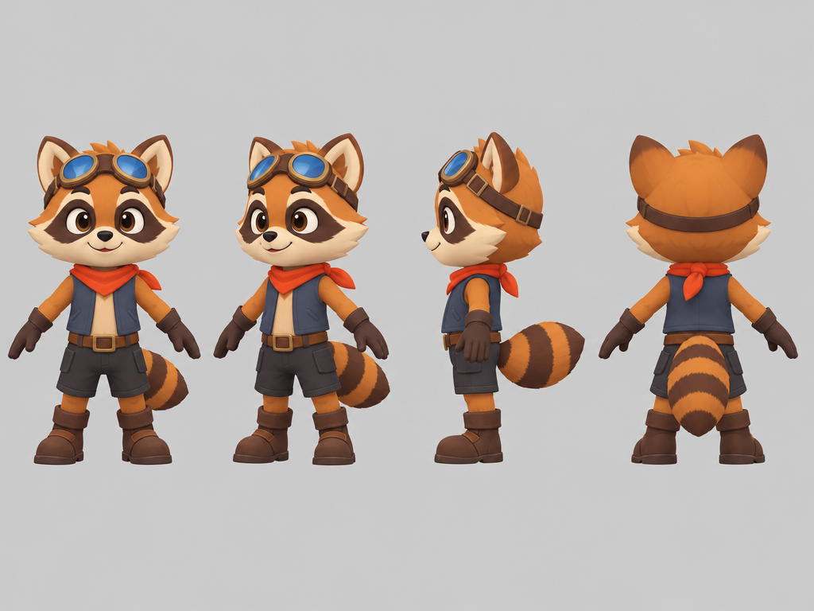
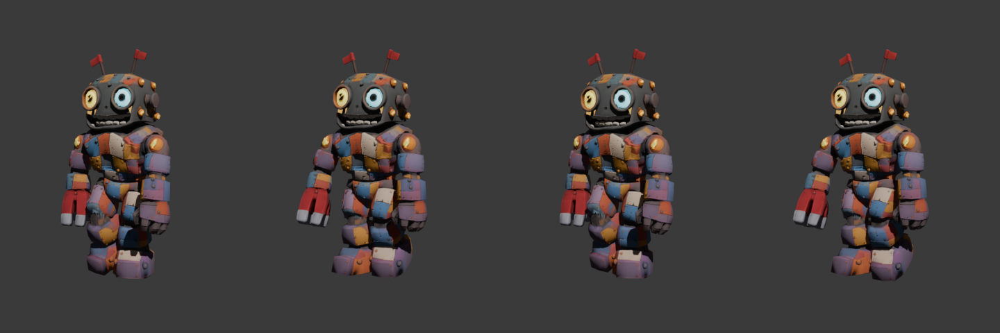
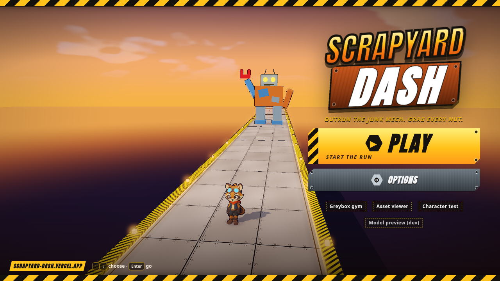
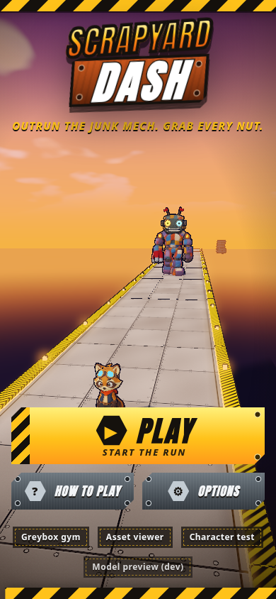

Run sheet for screen recording
Talking points
Fourteen beats. Each has something to show on screen (clips loop muted) and three short lines to say. Read top to bottom while screen-sharing this page or the game. Lines in quotes are prompts I actually typed.
01 Cold open02 Start from a template, not a blank page03 The premise in one line04 Four mockups, one pick05 Greybox gym: rules before art06 The raccoon: fal → Tripo → Blender07 Same pipeline for the mech08 Free strafe, same lanes09 Sound from text prompts10 A world that feels lived in11 The mech makes an entrance12 A menu that looks like the game13 Ship it14 The takeaway
01
Cold open
Say
- This is Scrappy Yard: a raccoon running at the camera, a junk mech stomping after him.
- Grok Bot built it from a starter template in about a day and a half of chat.
- I directed. I didn't write the code or make the art.
share/media/trailer/scrappy-yard-gameplay-trailer.mp402
Start from a template, not a blank page
Say
- vgd-wasm-game-template v2.7.0: engine, Rust sim, release checks, smoke tests.
- First job I gave it: sanity-check the README, skills and quickstart from that exact tag.
- Then a new game folder, blank-start, first commit Nov 3 at 3:45 PM.

share/media/kickoff/broll/desk-01.png03
The premise in one line
Say
- "Crash bandicoot x Mario 3d x Spyro style runner , running toward camera, mech in the background chasing you."
- I answered question cards: win/lose, what should feel good, what camera.
- That became docs/brief.md.

share/media/review-1/D.png04
Four mockups, one pick
Say
- fal generated four fake gameplay screenshots, same camera, different worlds. About $0.15 total.
- Grok Bot recommended C. I picked D, scrapyard neon, for personality.
- D's weak spots became rules: more contrast, simpler sides, original hero.

share/media/review-1/C.png05
Greybox gym: rules before art
Say
- Placeholder shapes, real rules: three lanes, jump, barrels, cars, gaps, a chasing mech.
- Zero credits spent.
- My note: "not enough 'heads up'". The camera now shows about 5 times more track ahead.
share/media/kickoff/broll/gym-broll.webm06
The raccoon: fal → Tripo → Blender
Say
- A turnaround sheet from fal, then a Tripo mesh from three views.
- Tripo auto-rigged it and added idle, run, jump and land.
- A Blender script fixed scale, pivots and loop seams. I said "autorig and then blender polish".

share/media/kickoff/char_raccoon_player-turnaround.png07
Same pipeline for the mech
Say
- The mech's reference was a crop of mockup D.
- Tripo rig plus a walk preset became a 1.6 s stomp loop.
- I approved about 65 credits. It cost 45. Every paid step asked first.

share/media/kickoff/mech-stomp-loop-contact.png08
Free strafe, same lanes
Say
- I asked for freedom to move left and right while keeping collisions lane-based.
- You slide freely; hazards still belong to three lanes.
- Playtested from my MacBook over a private Tailscale link while it kept building.
share/media/trailer/project/assets/footage/dodge.mp409
Sound from text prompts
Say
- ElevenLabs: a menu theme, a 150 BPM chase theme and 15 sound effects.
- I handed over the API key through a secure prompt, never in chat.
- When I said "not the clown sound", the crash got regenerated as real scrap metal.
share/media/trailer/project/assets/footage/nuts.mp410
A world that feels lived in
Say
- Tripo made a crane and a scrap plane; Blender made the tires, pallets, skyline and clouds.
- Planes fly over every 11 to 17 seconds.
- "No square or rectangle cubes" got rid of the last placeholder boxes.
share/media/trailer/project/assets/footage/wide.mp411
The mech makes an entrance
Say
- Play opens with the mech dropping in, slamming and roaring. Tap to skip.
- In the chase it leans and lunges, and the stomps speed up as it closes.
- Same rules as the gym; it just performs now.
share/media/trailer/project/assets/footage/intro.mp412
A menu that looks like the game
Say
- "More game like, look entirely different." Hazard tape, steel plates, stamped wordmark.
- Hard cut from splash to menu.
- Then I cut How to Play. It's on the pause card now.

share/media/menu-redesign/nohelp-menu.png13
Ship it
Say
- "Deploy the production game on vercel." Smoke tests had to pass first.
- First live at scrapyard-dash.vercel.app on Nov 4, 2:51 PM. Production alias scrappy-yard.vercel.app went live Nov 5.
- Then "make a trailer": HyperFrames cut real footage to the game's own music.
share/media/trailer/project/assets/footage/caught.mp414
The takeaway
Say
- A solid template plus short, specific chat notes got further than starting from zero.
- Mockups first, greybox second, assets third, polish from playtests.
- Ask before every spend; keep every prompt next to its output.

share/media/menu-redesign/after-phone-menu.pngDeeper detail for any beat: Mockups · Tripo · UI · ElevenLabs · World · Gym → Ship · Prompts + tools.